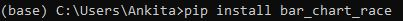
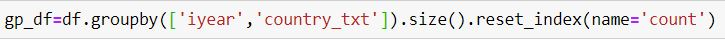
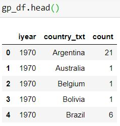
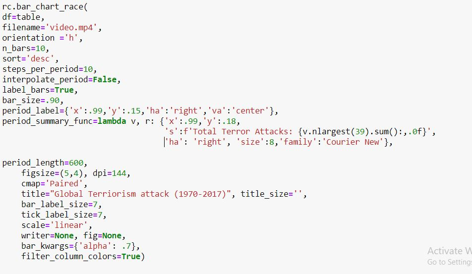

Terrorism, a word that has been exploding up all over the news in the past decade. Many countries are affect and can see the rise in terrorism in this century.
Here we will see how we can use bar race graph for analysing the growth of terrorism in different countries from 1970.
What is bar race graph?
We have seen static bar graphs earlier which can be created using Metplotlib or others. Bar race graph is a open source library for creating animated bar graphs which are widely popular in social media nowadays.
Let's get started :)
Step 1:
Installing bar race graph package.

I am using data from Golbal Terrorism Database "https://start.umd.edu/gtd/". This data includes systematic data on domestic as well as international terrorist incidents that have occurred during 1970-2017 which includes more than 180,000 attacks.
There are 135 columns in this dataset. I will be grouping the date and country to get the number of attacks each year for different countries.

After grouping the data looks like This

We are all set to use the bar race graph function. This is as easy as drawing a bar graph in the excel sheet.

Now we have the final graph which is beautiful and fun to look at. I have saved the below graph in a .mp4 format. Play the video and you can easily analyse changes occured during these years.
Start from year 1970, terrorism was high compared to other countries in United states and hardly other countries had terror activities.
The spike in terrorism started from 2000, This is when the ISIS was formed. The first major spike can be seen in Iraq.
Overall, Iraq, Afghanistan, India and Pakistan have high terror attacks globally.